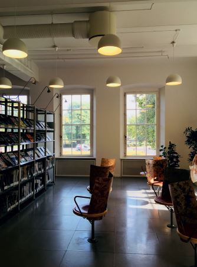
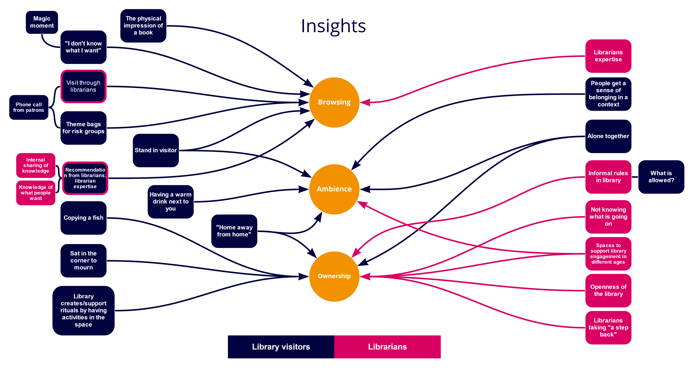
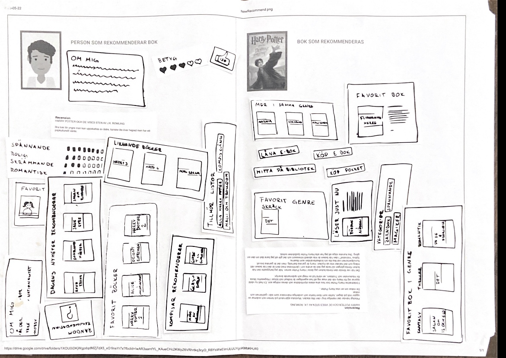
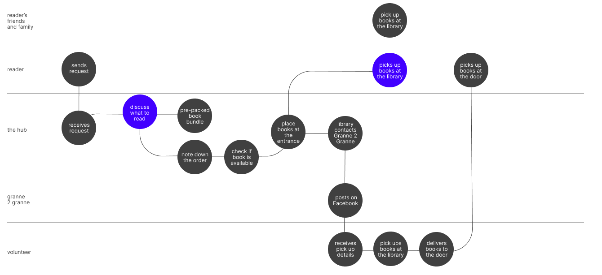

Book Browsing Services During a Pandemic
April — June 2020
Group project in Malmö University
Service design
Fieldwork
Co-design
During the Service Design course at Malmö University, in collaboration with the City library, our student group explored the reading rituals of library visitors and the work librarians do to support them during Covid-19.

Importance
Malmö Stadsbiblioteket is a space many people visit every day to study, read, and be alone together with others. Librarians have observed that some visitors have the same daily routines and timing—reading the same newspapers, sitting at the same computers. The library is an important part of their daily life.
“
You come here as a kid, maybe turn away for a few years, you come here to studyand help go away for a few years. Maybe you have kids of your own, maybe you’re unemployed and come back: (throughout life) you interact with the library with different needs.
Project developer, Malmö Stadsbibliotek
Digital Pressures
The library had to quickly change how people borrow books, read, and participate in events. This left many regular users, especially older adults, unable to use the library. Library staff are also changing how they work and asking urgent questions. As an institution focused on physical interaction, the library wants to maintain its culture and uniqueness, not just go digital.

Browsing
Our research revealed several design opportunities. We decided to focus on browsing, as it's at the core of library services and the reading ritual most affected by the pandemic. Browsing for books can be a big part of the reading experience. People have particular ways of browsing and often follow specific routines. Some can't visit and browse in person during different periods of life or due to their situation. Browsing is also tied to the physical presence of a book—its appearance, size, and printed text. When a book is available to touch and read, visitors get an impression and can decide whether to borrow it. Some people spend hours walking around the library browsing, making time for this activity.

Understanding
The first workshop took place outside the library and was open for people to participate as they passed by. This let us engage with them safely while staying connected to the physical library. We had 17 participants throughout the day, both library visitors and passersby. This workshop helped us learn more about people's personal browsing practices and rituals. We prepared two exercises to help people think about browsing for books. During these exercises, we held interviews and observed people's behavior. We also asked them to think out loud. One task focused on physical browsing, and the other on finding a book to read.

Co-Design
The previous workshop showed how important recommendations are. Almost everyone we talked to relied on them in some way. The second exercise helped us understand what makes recommendations trustworthy to people.

Co-design workshop activities
Opportunities
The Importance of Recommendations
Almost every participant mentioned recommendations in different forms. These could be from friends, newspapers, radio, book clubs, or the library recommendation shelf. Recommendations help people feel confident about their book choice and discover new books to read.
Delivery Points
Workshop participants liked the idea of pick-up stations for books outside the library. They suggested these could be at transit hubs like Malmö Central Station or Södervärn, as well as parks, where they could pick up a book while walking. People also preferred impersonal postal boxes requiring a code. All participants also wanted to be able to return books this way.
Filtering Books by Physical Properties and Mood
Many factors influence what people choose to read. Mood plays a big role, similar to season but on a day-to-day basis. Some factors relate to the physical book—size, material, cover, or title. Book format also matters. Chapter length can be a deal breaker: very short chapters can make reading choppy, while long ones make it hard to pause and reflect. What's "too long" or "too short" is, of course, subjective.
